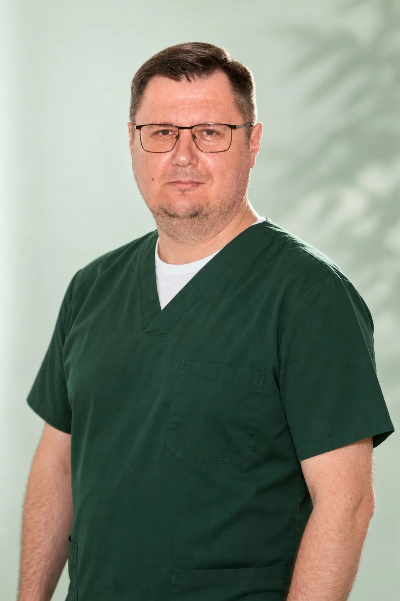
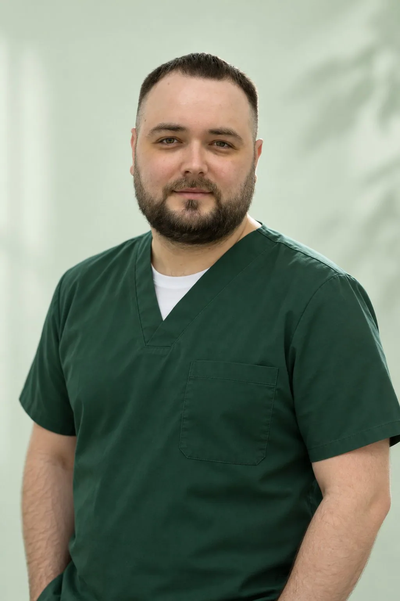
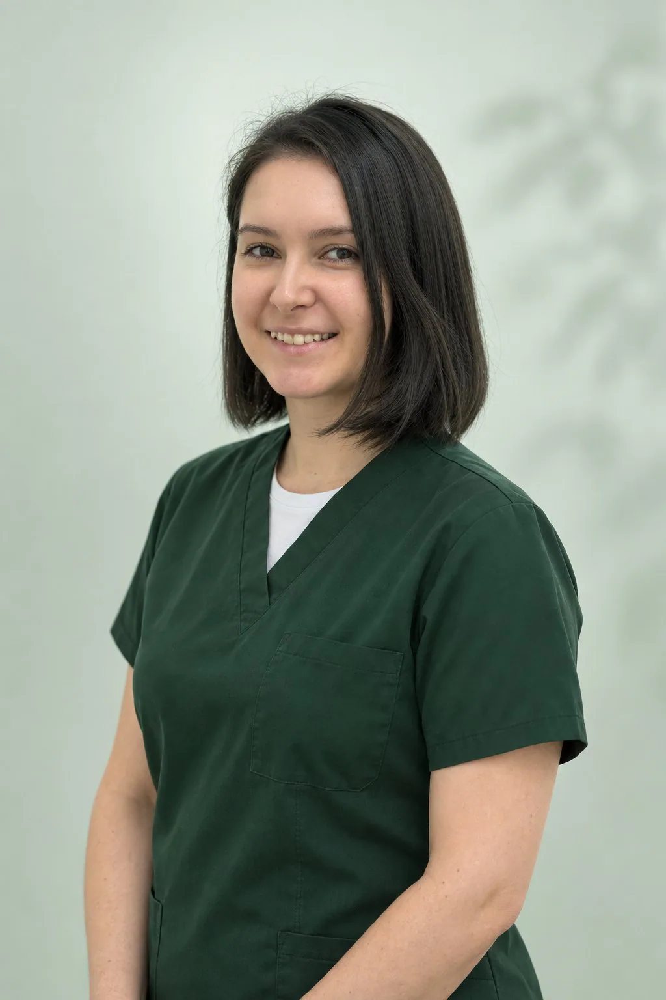

Солодухин Евгений Викторович
Главный врач, ортопед
Протезирование и восстановление зубов, протезы на имплантах
Записаться к врачу
Стоматолог-хирург, имплантолог
Ставит импланты, в том числе по хирургическому шаблону и по протоколу All-on-4, готовит челюсть к имплантации синус-лифтингом и костной пластикой, удаляет зубы. План лечения составляет вместе с ортопедом и терапевтом.
Стоматолог-хирург, имплантолог в Удельной. Точную стоимость врач называет после осмотра и снимков.
Отзывы с ПроДокторов дословно, со ссылкой на каждый.
Все отзывы о враче на ПроДокторовХочу выразить огромнейшую благодарность хирургу-имплантологу Хлудневскому Михаилу Сергеевичу. Имплантация меня жутко пугала больше, чем просто лечение зубов. Но здесь я поняла, что в надежных руках профессионала. Врач все подробно мне объяснил, сделали КТ-снимки, план лечения составил на консультации. Ответил подробно на все мои многочисленные вопросы, подобрал оптимальную систему имплантов для меня. Сама операция прошла просто на отлично, безболезненно и быстро. Отдельное спасибо ассистентам за поддержку и доброе отношение.
Понравилось: Все очень понравилось: от консультации до операции.
Пациент, приём в апреле 2026 · отзыв на ПроДокторов, 16.10.2026
Хочу выразить огромную благодарность врачу хирургу-имплантологу Хлудневскому Михаилу Сергеевичу за высокий профессионализм и чуткое отношение к пациентам. Делала имплантацию «Всё на 4-х» верхней и нижней челюстей. На первом приеме Михаил Сергеевич понятно и подробно объяснил каждый шаг лечения. Я очень боялась и удаления, и имплантации, но все операции прошли безболезненно и быстро. Михаил Сергеевич во время операций постоянно интересовался моим самочувствием, давал четкие рекомендации на период заживления. Михаил Сергеевич - врач «золотые руки», тактичный, вежливый. Выражаю благодарность также ассистентке - Ирине. Приятно смотреть на их слаженную работу. Рекомендую всем клинику и, конечно, Хлудневского Михаила Сергеевича!
Понравилось: Все понравилось.
Пациент, приём в мае 2026 · отзыв на ПроДокторов, 18.09.2026
Пришла в стоматологию по рекомендации, нужно было установить импланты, на приёме Хлудневский Михаил Сергеевич провёл консультацию, осмотрел полость рта, всё подробно поэтапно объяснил. Ответил на все мои вопросы. Мне сделали КТ-снимок, записали на дальнейший приём на удаление и имплантацию. Все прошло безболезненно и достаточно быстро!
Понравилось: Все понравилось.
Не понравилось: Не было такого.
Пациент, приём в сентябре 2026 · отзыв на ПроДокторов, 01.09.2026
Обратилась в эту клинику и к Михаилу Сергеевичу по рекомендации своих знакомых. И не пожалела. Нужно было вырвать 2 корня, и один из них - восьмёрка. Все на высшем уровне. Врач отличный, ничего не почувствовала. Вежливый, тактичный, мастер своего дела. Я в восторге. Буду в дальнейшем обращаться только к Михаилу Сергеевичу. Всем рекомендую.
Понравилось: Персонал отзывчивый, вежливый. А сам врач от Бога. Он лучший!
Пациент, приём в августе 2026 · отзыв на ПроДокторов, 09.08.2026
Долго не могла решиться на имплантацию - боялась осложнений. Но после консультации у Хлудневского Михаила Сергеевича, хирурга-имплантолога, здесь все страхи исчезли. Чёткий план лечения, подробное объяснение, бережное отношение. Михаил Сергеевич установил имплант, всё прошло спокойно. После операции дал рекомендации, позвонили на следующий день - узнали, как моё самочувствие.
Понравилось: Все очень понравилось.
Пациент, приём в апреле 2026 · отзыв на ПроДокторов, 04.08.2026
Пришел в стоматологию «Умная Медицина» с острой болью. Меня быстро оформили на ресепшен, сделали снимок прям в клинике, направили в кабинет хирурга. Михаил Сергеевич осмотрел, всё понятно объяснил и удалил зуб, я даже не понял! Очень быстро, безболезненно, врач - профессионал. Буду всем рекомендовать! Спасибо большое доктору Хлудневскому М. С.
Понравилось: Все понравилось! Чисто, уютно, персонал вежливый.
Пациент, приём в июне 2026 · отзыв на ПроДокторов, 05.06.2026
Спасибо врачу - стоматологу-хирургу Хлудневскому М. С. Удаляли восьмёрку, очень боялась, операция продлилась всего 15 минут, ничего не болит и прекрасно заживает. Хирург интересовался самочувствием и был готов поддержать и успокоить, дал рекомендации. Настоящий профи! Рекомендую данного доктора.
Понравилось: Бережное отношение к пациенту.
Пациент, приём в марте 2026 · отзыв на ПроДокторов, 03.04.2026
Здравствуйте! Обратился в данную клинику, так как друг посоветовал врача-хирурга - Михаила Сергеевича. Приехал на консультацию, все рассказали, показали. Михаил Сергеевич очень внимательный врач. На верхней челюсти зубов оставалось мало, и шатались, предложили вделать все на 4-х с несъемным протезом. Операция прошла безболезненно, восстановление тоже прошло хорошо. К новому году я уже был с зубами и ел салаты. Сейчас езжу каждый месяц на осмотры. Рекомендую Михаила Сергеевича и стоматологию «Умная Медицина»!
Понравилось: Понравилось все! Очень внимательный персонал.
Пациент, приём в декабре 2025 · отзыв на ПроДокторов, 10.03.2026
В моей жизни был неудачный опыт работы с врачом стоматологом-хирургом. Была неудачная попытка удаления зуба мудрости. По совету знакомых пришла на прием к Михаилу Сергеевичу. Было ощущение, что я попала к волшебнику. С первых секунд понятно, человек не просто доктор. Это тот специалист, про которого говорят, что это призвание!
Понравилось: Понравился подход специалиста. Все рассказали, объяснили, показали. У Михаила Сергеевича просто золотые руки. На самом деле таких специалистов я встречала в своей жизни единицы. Удаление сложного зуба мудрости, сломанного предыдущим неудачным удалением, прошло просто для меня идеально. Также с Михаилом Сергеевичем установили 4 импланта. Все прошло замечательно для меня.
Пациент, приём в январе 2025 · отзыв на ПроДокторов, 25.02.2026
К Михаилу Сергеевичу обратилась по рекомендации знакомого, потому что в клинике, в которой ставила ранее импланты, предложили непонятный мне план лечения, хотела услышать альтернативное честное мнение. Консультация прошла хорошо (на консультации был еще ортопед), сделали снимок, проверили импланты, которые делала в другой клинике, с ними все ок. И запланировали имплантацию в других сегментах. Ставили 4 импланта сразу, ни разу не пожалела, что не стала растягивать это на несколько приемов. Доктор всю операцию был «в контакте» со мной, все прошло без суеты, спокойно. У доктора прекрасный ассистент, чувствуется, что вместе давно работают и понимают друг друга без слов. Ортопед сначала поставил коронки на старые импланты, чтобы я начала нормально жевать уже. И потом, когда импланты прижились, поставили на оставшиеся. Всем довольна, рекомендую доктора от души!
Пациент, приём в августе 2025 · отзыв на ПроДокторов, 09.02.2026
Громова, 10/2
пгт Удельная, Раменский округ. 5 минут от Жуковского.
Ежедневно с 9:00 до 21:00
+7 495 150-36-15К нам ездят из Жуковского, Раменского, Быкова, Ильинского, Красково, Малаховки, Островцов, Люберец и Балашихи.
Позвоните по номеру +7 495 150-36-15 или оставьте заявку на сайте и укажите врача. Администратор перезвонит и подберёт время. Клиника работает ежедневно с 9:00 до 21:00.
Первичная консультация бесплатная. Врач осмотрит, посмотрит снимки и предложит план лечения с ценой.
Установку имплантов, в том числе по хирургическому шаблону, сразу после удаления зуба, по протоколам All-on-4 и All-on-6; открытый и закрытый синус-лифтинг, наращивание кости, пластику мягких тканей у зубов и имплантов; удаление зубов любой сложности, в том числе ретинированных, пьезоскальпелем.
Да, возьмите КТ на диске или файлом. Снимок можно прислать заранее в Telegram или MAX, врач посмотрит его до приёма. Если снимка нет, КТ двух челюстей сделают в клинике за 4 500 ₽.
В стоматологии «Умная Медицина»: Московская область, Раменский округ, пгт Удельная, ул. Громова, 10/2. Это 5 минут от Жуковского, у клиники своя парковка.
Запишитесь на консультацию: врач осмотрит, посмотрит снимки и предложит план лечения с ценой.
Имеются противопоказания. Необходима консультация специалиста.

Главный врач, ортопед
Протезирование и восстановление зубов, протезы на имплантах
Записаться к врачу
Хирург, имплантолог
Удаление зубов и имплантация, хирургия в сложных случаях
Записаться к врачу
Терапевт, эндодонтист
Лечение кариеса и каналов, сохранение зубов
Записаться к врачу
Терапевт, ортодонт
Эстетическая реставрация и прикус
Записаться к врачу
Ортопед
Восстановление зубов и протезирование, эстетичные коронки
Записаться к врачу
Детский стоматолог
Дети, профилактика и лечение детских зубов
Записаться к врачуПерезвоним за 5 минут, подберём врача и удобное время.
Оставьте номер, администратор перезвонит и ответит на вопросы.
Подойдёт КТ, панорама, прицельный снимок или фото плана лечения из другой клиники. Врач посмотрит и ответит в течение рабочего дня. Это бесплатно.
Хирург, ортопед и терапевт осмотрят вас вместе, сделаем КТ. Консультация бесплатная, стоимость лечения врач назовёт после осмотра.
Консультацию ведут вместе
ХирургМихаилПервый визит бесплатно
Хирург, ортопед и терапевт посмотрят ваш случай вместе и предложат два-три варианта с ценой. Оставьте номер, администратор перезвонит и подберёт время.
Скидка 10% на лечение, если оплатить его в день консультации
Перезвоним за 5 минут, ежедневно с 9:00 до 21:00. Отправляя заявку, вы соглашаетесь на обработку персональных данных.